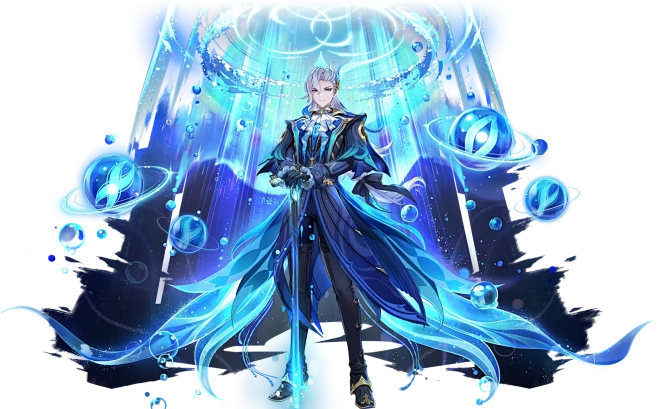
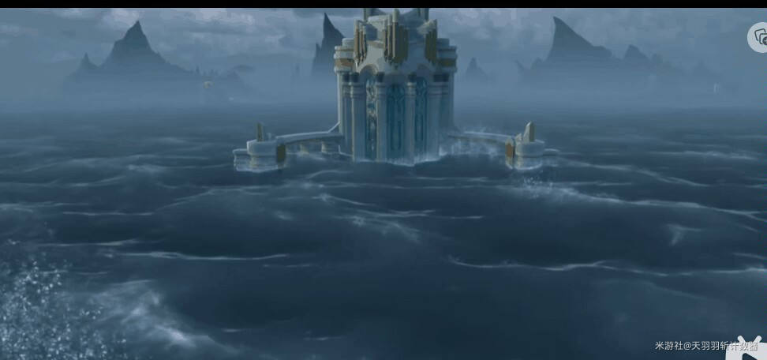
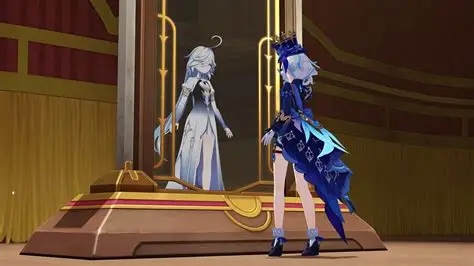

| Historia |
|---|
1. Llegada a Fontaine y el sistema de justicia.png)
El Viajero llega a Fontaine, una nación obsesionada con la justicia y la tecnología. La vida diaria está dominada por el Tribunal de Fontaine, donde cada caso se convierte en un espectáculo público. La Arconte Hydro, Furina, preside los juicios como una figura teatral y excéntrica. |
2.Conocer a Neuvillette.webp)
El Viajero conoce a Nahida, quien revela que ha estado encerrada durante 500 años por el Akademiya. Ella explica que los sabios planean crear un “dios perfecto” usando tecnología y conocimientos prohibidos. Nahida pide ayuda al Viajero para detenerlos. |
3. El misterio de las profecías.png)
Fontaine vive bajo una profecía antigua: la nación será juzgada y purificada por el agua. La gente teme que el “día del juicio” esté cerca. El Viajero descubre que Furina oculta algo importante sobre esta profecía. |
4. El caso de Lyney y Lynette.png)
El Viajero se ve envuelto en un juicio cuando los magos Lyney y Lynette son acusados de asesinato. Durante el juicio, Furina actúa de forma exagerada, mientras Neuvillette mantiene la imparcialidad. El Viajero ayuda a demostrar la inocencia de los hermanos y descubre que fuerzas ocultas están manipulando los casos judiciales. |
5. La verdad sobre Furina
El Viajero descubre que Furina no es realmente la Arconte Hydro. Durante 500 años, ha actuado como una “Arconte falsa” para proteger a Fontaine. La verdadera Arconte Hydro, Focalors, se sacrificó para sellar una catástrofe antigua. Furina es en realidad una humana creada para cumplir un papel teatral y mantener la profecía bajo control. |
6. El despertar de Neuvillette Neuvillette comienza a recuperar recuerdos de su verdadera identidad: es el Hidrodragón Primordial, el ser más antiguo de Fontaine. Su poder está ligado al equilibrio del agua y la justicia. La profecía se activa cuando él empieza a despertar. |
7. El juicio final de Fontaine La profecía se cumple: las aguas comienzan a elevarse y amenazan con inundar toda la nación. El Viajero, Furina y Neuvillette trabajan juntos para detener la catástrofe. Neuvillette asume su verdadero poder y enfrenta el juicio que Focalors dejó pendiente. |
8.El sacrificio de Focalors Se revela la verdad completa: Focalors dividió su esencia en dos partes: Furina, la parte humana La voluntad divina, sellada en las profundidades Lo hizo para evitar que Fontaine fuera destruida por un juicio divino injusto. Su sacrificio permitió que la nación sobreviviera 500 años más. |
9. Restauración de Fontaine
Neuvillette completa el juicio final y libera a Fontaine de la profecía. Las aguas retroceden y la nación entra en una nueva era. Furina, ahora libre de su papel forzado, comienza una vida como humana normal. Neuvillette se convierte en el protector legítimo de Fontaine. |
10. Conclusión del arco de Fontaine.jpg)
El Viajero recibe nuevas pistas sobre su hermano/a y sobre el papel de los Arcontes en el destino de Teyvat. Con Fontaine en paz, el Viajero se prepara para viajar a Natlan, la nación del fuego. |
.png)
.png)
.png)